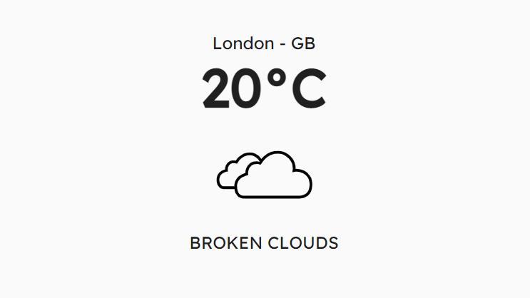
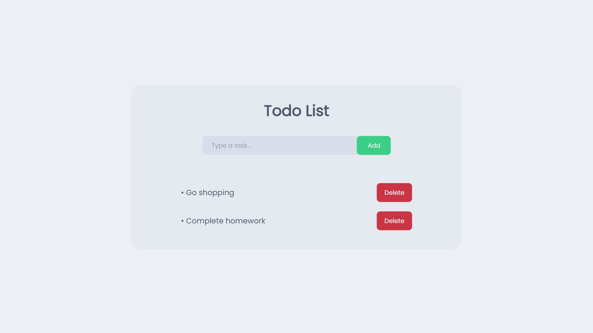

Portfolio
Nitro Design
A Discord bot for the 10k+ member design server, Nitro Design. It features a request system, a starboard, and ...

Simple Weather App
A simple weather app made using Electron. Users can use the search bar to find the weather of any city.

To-do List
A basic and easy-to-use to-do list site made using the PostgreSQL, Express, React.js, and Node.js